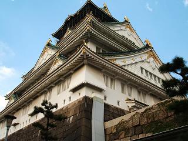
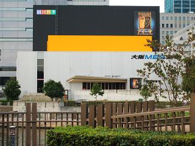
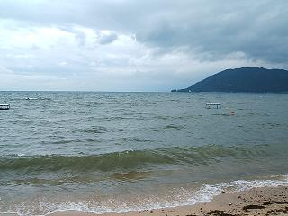
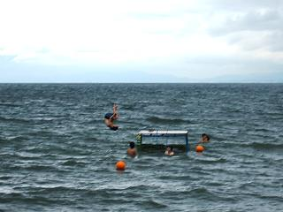
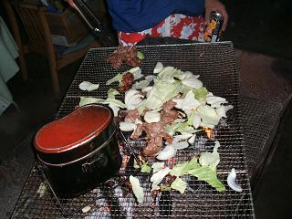
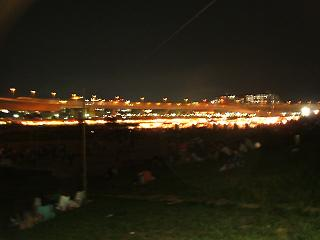
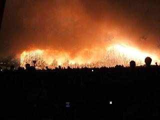
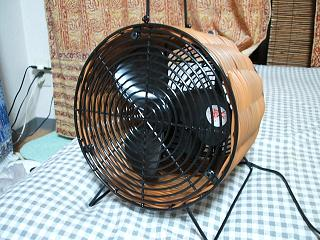

日々、想ふ
〜過去感じたことがつれづれと〜
（できるだけ最大化してお読みください）
日々、想ふ
理想と現実。８/３１
今日で教習ひと区切り、あとは学科と技能の検定と、
試験場での試験だけです。
・・思ったよりまだまだですね、タケユキです。
今日は昼に教習行ってバイト行って、
バイト行ったら怒られて、
帰りに関西ウォーカー買って読んでたら
関西ウォーカーなのにディズニーリゾートの
特集やってた。
行きたいなぁ・・・。
別に引きこもってるわけじゃないですよ？
いろいろ予定が詰まっててそういう余裕がないんですよ。
・・・明日でバイト５連勤・・。
今日の家計簿：
| 関西ウォーカー | ３２９円 |
| 古本屋で小説２冊 | ５４６円 |
| 食材 | ９２２円 |
| 酒 | ９０２円 |
| 計 | ２６９９円 |
吹き荒れる風。８/３０
俺は新聞をとっていません。
そういうわけでテレビ番組とか天気とかを知るためにネットを使います。
今日も台風の様子を知るためにYahoo天気情報を見てました。
台風に「何号」って名前がついてるのは知ってたんだけど
もっと具体的な名前もあるとは知りませんでした。
今日本州に上陸した台風はアジア名で
チャバ
というそうです、タケユキです。
暴風警報、波浪警報とか出てるのにバイトですよ。
まぁ行く時は風が強かったくらいだったんだけど。
それで台風接近中だからってんで会社帰りに寄ってく客もほとんど
おらず、
結局帰りには大雨の中チャリこいで岐路に。
それから日記更新してるわけだけど
なんか本格的に台風が近づいてるみたいです、風がすごいです。
・・えぇ正直な話、書くことがありません。
たまにはそういう一日もありだと思いたい、夏の一日。
広島帰りたいなぁ・・。
今日の家計簿：
| ゲーセン | ４００円 |
| マンガ「太陽の黙示録」６巻 | ５３０円 |
| 計 | ９３０円 |
ATB 〜Across The Border〜。８/２９
OS再インストール無事完了、タケユキです。
今日は旅行会社に行ってきました、
日曜日ってこともあって旅行会社はかなりの込みよう。
バイトまでけっこう時間があったんでのんびり待ってたら
「よろしかったらお待ちの間どうぞ」
アイスをもらった。
旅行会社でアイス？
不思議に思ってたんだけどなんか
日曜日に来店したら何かのキャンペーンでアイス配ってるらしい。
それで待ちながらアイス食べてたら
食べ終わる前に自分の番が回ってきたみたいで
食べ途中のアイスをほっとくわけにもいかず
アイスを食べながら話を進めることに、これはかなりの非常識ですか。
しかもアイスもらう前に無料のドリンクコーナーみたいなとこで
熱い紅茶取って飲んでたから
熱いのと冷たいのがお腹ん中でごっちゃになって
話の後半では腹痛が始まって説明が頭に入らず。
結局何しにいったのか当初の目的を果たせたのかもわかりません。
でもとりあえず夏休み後半の金銭のめどが立ったんで
買い物してみた。
最近水代わりに飲んでる三ツ矢サイダーも２本(1.5Lペットボトル)買ってみた。
明日は台風上陸するみたいだし買いだめもして準備万端。
あとはバイトが休みになるのを願うだけ・・
お昼までに警報が解除されんかったらバイト休んでいいとかいう
便利なルールないかなぁ・・ないなぁ・・。
今日の家計簿：
| デジカメ予備バッテリー | ３７５９円 |
| 三ツ矢サイダー等 | ５２４円 |
| 雑貨 | ６０９円 |
| 計 | ４８９２円 |
夏だからできる事？８/２８
福井土産「五月ヶ瀬」をもらいました、

なので今日の夜食はこれです、タケユキです。
最近パソコンの調子がよろしくなくて
今からOSの再インストールを
しようと思うんで今日の更新はこれだけ。
明日更新してなかったら再インストールに失敗したと思ってください。
今日の家計簿：
| 三ツ矢サイダー(1.5L) | １９８円 |
| 計 | １９８円 |
今日の出来事。８/２７
起きたらいいともが始まったくらいの時間でした、タケユキです。
昼過ぎくらいに家に帰ってきて
風呂行ってちょっと休憩してからバイト。
帰ってきてから「平成狸合戦ぽんぽこ」。
それから晩御飯作ろうと思ったら家の米が尽きてた。
仕方なく晩御飯は三ツ矢サイダー＆餃子。
・・・こんなんで足りるかっ！
てなわけで食べ物探しに夜のコンビニ行ってきます。
それと昨日載せられんかった大阪城の写真はこれ。

小学校の修学旅行の時に見て以来の大阪城。
全然記憶になかったけど屋根緑だったんじゃね。
入場料取られるから城の中には入らんかったけど。
あと大阪城のすぐ近くにすごいものを見つけた。

劇団四季ーーーっっ！！
劇団四季の大阪劇場ってこんなとこにあったんじゃね、知らんかった。
６月に見に行って以来２ヶ月も(も？)見に行ってない。
夏休み中にはお金がない＆たぶんチケットとれないから
１１月くらいに見に行けたらいいなぁ。
その前に一緒に見に行く人を見つけんといけんわけですが。
今日の家計簿：
| 電車賃 | ４８０円 |
| 食料等 | ７９８円 |
| 計 | １２７８円 |
パスポ。８/２６
寝言で言われると対処に困る一言、
「・・眠い」
そんなこと言われても・・あなた寝てるっしょ、タケユキです。
９月に必要なもんで昼からパスポートの申請をしにでかけてました。
旅行で日本出る予定なんでそろそろ申請しないとやばいわけです。
パスポートセンターが大阪城の近くにあったんで
申請ついでにちょろっと大阪城寄ってきました。
今写真は載せれんのだけどでっかい、
結局のところ城っていうのは一家庭の家なわけじゃん？
一家族とそのお手伝いさんだけでこれはでかすぎだと思う。
ってか城見てたら観光客の外国人二人組(たぶんアメリカ人)が石垣に座ってたんで
「ハーイ！！」
って話しかけたら、
「ハーイ！＊☆◎□＊○」
ハーイしか聞き取れんかった。
英会話能力なし、英語の単位落とす、
これで海外なんて俺は大丈夫か。
今日は友達の家来て焼肉＆飲んでるんで顔真っ赤。
夏も半分くらい終わったねえ・・。
日記を更新する時ってのはその日あった出来事を思い返すんで
更新するたびに夏の終わりの近づきを感じずにはいられません。
今日の家計簿：
| 電車賃 | ９９０円 |
| 酒代 | １０００円 |
| 計 | １９９０円 |
休みの合間に。８/２５
広島人というのはたいていが故郷に誇りを持っており、
その郷土愛ゆえ、その誇りゆえに、
"広島焼き"というものの存在を認めない。
そばが入っているそれこそが、"お好み焼き"であると主張する。
まぁそんなことを言ってると関西だとしばしば衝突します。
「何言ってんだ？」みたいな目で見られました、
半分冗談で言ってんじゃんよ、そんな怒らないでください、タケユキです。
今日は登校日、前期の成績通知がありました。
と言っても一般教養の授業の成績だけの通知だったので
英語の授業二つだけの成績通知だったんだけど。
はい、
この英語不可でした。
まぁ分かってたことなんだけど。
大学の授業ってのは自分がどうがんばるってより
どの先生になるかってのがでかいのよね（言い訳）。
てなわけで８月２５日現在、
２年前期の単位取得率
５０％。
これって普通にやばくない？
今日の家計簿：
| 昼飯 | １６０円 |
| 古本屋で買った小説（劇場版セカチュー） | ２１０円 |
| 食費等 | ３３６円 |
| 計 | ７０６円 |
嵐の中で。８/２３,２４
気温２７度、天気曇りのち雨、
いやあキャンプ日和、タケユキです。
というわけで一泊二日の日程で琵琶湖にキャンプに行ってきました。
大阪駅から１時間とちょっとで琵琶湖のキャンプ場に到着。
湖のくせに波があるとは思わんかった、すっげえ琵琶湖。
湖のくせに対岸が見えんなんて思わなかった、すっげえ琵琶湖。
でもやっぱりそれなりに汚れとんのね、琵琶湖。

テントを建てて、水着に着替え、さっそく泳ぎに。
いくら気温が低かろうと、
いくら天気が悪かろうと、
夏というこの季節、水に入らずおれようか。
この夏脱ヘタレを実行しつつある俺は、
水に入るはおろか、飛び込み台から飛び込んでみた、縦回転で。

コンタクトをつけたまま飛び込みをした俺を誰がヘタレと呼べようか。
取れたりせんか超ビクビクしてたけど。
泳いでる途中に雨が降ってきても
「もう濡れてるんだから雨降っても降らんでも同じ！」と続行、
を決めた２分後にテントに撤退開始。
テントの中はけっこう広かったんだけど
風がめっちゃ強くてほぼずっとバタバタいってた。
テントの中ではトランプ大会まずは定番、大富豪。
いろんな地方の人間が集まってゲームとかすると
ローカルルールとかあってそれの確認で最初けっこうとまどう、
カードの８を出すと今まで場に出されてるカードは関係なくなって
また新しくカード出せる（８切り）ってのは知ってたけど
ジョーカーには３を３枚同時に出すことで勝てるんだって。
全部採用してたらわけ分からんくなるんで
とりあえず基本的なルールだけで勝負開始。
これ負けたら普通にムカつくね、勝ったら普通にうれしいけど。
大富豪やってたら日も落ちてきたんで
キャンプらしく焼肉始めました。

墨に火をつけて開始、米も飯ごう（写真左下）で炊いてみたり。
この間も雨ザーザー降ってたんだけど気にせず焼肉を楽しむ。
ちょっと
生っぽいレアな感じの肉でしたが。
焼肉終わってからまたテントでトランプ開始。
次の種目は七ならべ。
またここで知った新たなルール、
７ならべってジョーカー使うんじゃね、それも知らんかったよ。
トランプ自体最近やる機会がなくてたぶん大学になって初トランプ。
けっこう長い間やってたんだけどその間もずっと外は大雨＆大風。
日付が変わる頃に風がかなりひどくなってて
テントを支えるペグ（クギみたいなやつ）が一部外れたりしたらしい、
俺はその時寝ててあんまり覚えてないんだけど。
もうキャンプってよりサバイバル。
まぁその風も1時くらいには峠を越したみたいで静かになって
安心して就寝。
キャンプとか野宿とかそういう時はけっこう朝早く目が覚めるもんで
６時半くらいに動き出して浜辺で湖を眺めながらたそがれてみた。
・・たそがれてたら日差しがあったかくて気付いたら９時くらいまで浜辺で寝てた。
んでもってみんな起き出してきてから
テントつぶして周りを片付けて岐路へ。
う〜ん、夏っぽい日々だった。
でもって今日の夕方から教習行ってきた。
現実に帰ってきたって感じでした。
キャンプの家計簿：
| 電車賃 | ２９００円 |
| 朝飯とか | １０００円 |
| キャンプ費用 | 約３０００円 |
| 計 | ５９００円 |
汗、流れる。８/２２
太鼓の達人、「天体観測」の難易度オニをクリアしました、
わからない人はそんな気にしないでください、タケユキです。
今日一日はけっこうなテレビっ子になってました。
甲子園の決勝が今日行われてて
２４時間テレビは結局１時間くらいしか見ないままに終わり、
今はオリンピックの女子マラソンを見ながら更新しています。
先日扇風機買ってきてから部屋のクーラーをつけないようにしてるんだけど、
部屋が暑い、とにかく暑い。
かなり風通しがわるいせいで部屋の中が
台所とか部屋の外よりも暑かったりします、
でも負けない、これでクーラーつけたら扇風機買った意味ないじゃん。
明日はキャンプ行ってくるんで更新はお休みです。
今日の家計簿：
| キャンプの準備 | １２００円 |
| 計 | １２００円 |
たぶん今年最後。８/２１
俺の下の階に住む友達が同窓会で飲みすぎて
救急車で運ばれたらしいです、
それから６時間後に意識が戻ったらしい、
今なら笑い事ですが、これって普通に危ないことですよ、タケユキです。
今日はお昼から久しぶりの教習へ、人生で初めて高速を走りました。
右足だけで１００km出すとかすげえね、俺の右足すげえ。
・・ごめんなさい嘘です、車がすごいです、文明の進歩がすごいです。
夕方からは近所の猪名川花火大会へ行ってきました。
市が主催するけっこう小さい花火大会なんだろうと思ってたら、
なめてた。
６時くらいに河川敷についてシートで場所取り。
それから屋台見に行ってみました。
この写真じゃ分かりにくいんだけどこの光ってる部分全部屋台。

いざ花火が始まってみるとかなりの量の花火が。
かなり距離が近いところで打ちあがってたせいか
今年見に行った花火の中で1番の迫力で、
今までに見た事がない仕掛け花火が出てきたりかなりきれいだった。
でも君(誰？)のほうがもっときれい。
この花火大会のクライマックスは「ナイアガラ」って言われる花火でした。

この仕掛け花火は水の代わりに火の粉が滝のように落ちていく花火。
花火がパァッと輝いた時は周りから大きな拍手が。
指笛やりたいと思ったけど口笛もまともにできない俺ができるわけもなし。
夏の目標が一つ、増えました。
今日の俺：１００点(優)。
今日の大学生Y君：７０点(良)。
今日の下の住人：６０点（可）。
今日のN田：６０点(不可)。
今日の家計簿：
| 花火とか | １０００円くらい |
| 計 | １０００円くらい |
友達の姉は。８/２０
日焼けした背中が脱皮始めました、
先週海に行った時の影響だと思います、タケユキです。
日記に書いたように昨日はアレックスの家に泊まりました。
夜遅くまで起きてたんで昼まで寝て、
何も予定がない今日一日何して過ごそうかと思ってたら
ケータイにメールが届く、ダニエルからだ。
I am in Osaka.
観光しに大阪に来てるらしい。
暇だったんでダニエルに会いに梅田へ。
春に帰省した以来約５ヶ月ぶりの再会、
なのに感動の（？）再会場所はなぜかブックファースト(本屋)でした。
大阪に来たのが二回目かそこらって話だったんで
丸ビルとかイーマに連れてって、
餃子スタジアムで餃子食った。
ダニエルは大阪の都会っぷりに
「すげぇ〜ビルでけぇ〜」
ずっとすげえでけえって言ってた。
餃子食った後にゲーセン行って次にロフト行ったりしてうろうろ。
「おもしろいもんいっぱいあるわ〜
こんなんだったら金使いまくるってのも分かる」
ダニエルも俺の浪費癖に多少納得してくれたんでちょっと安心した。
安心したんですよ、気を抜いたんですよ、
またやっちゃいました、今度は扇風機です。

でもこれは断じて衝動買いじゃないって！
家に扇風機ないからクーラーつけっぱなしとかになって
電気代が先月とか９８００円だったりしたんだから。
長い目で見ればこれは節約の一つなんです、もう夏半分終わったけど。
それからヨドバシ行って５０型のプラズマテレビ欲しいって言ってみたり
アジア雑貨のお店行って「安い！欲しい！」とか言ってみたり。
梅田案内はなかなかうまくいったんじゃなかろうかと。
ダニエルは今日はなんか姉ちゃんも大阪に来てるらしくて
そこに泊まるらしかったんで案内した後に別れた。
でもよ、ダニエル？
高校の時おまえとクラス一緒だったけど、
塾も一緒だったけど、
姉ちゃんがスチュワーデスなんて聞いてなかったぞ？
なんでそういう大事なことを先に言わない？
今日の悔いはもっとさわやかに挨拶しとくべきだったこと。
なんかもう節約はどうでもよくなってきました。
下の家計簿もただつけてるだけでだからどうってわけじゃなし。
今日の家計簿：
| 電車賃 | ４９０円 |
| 扇風機 | １５７５円 |
| 餃子 | ７６０円 |
| ゲーセン | ５００円 |
| 計 | ３３２５円 |
僕は未来を・・。８/１９
これは・・悪魔の発明じゃあ！タケユキです。
映画「スチームボーイ」の名台詞で始まった今日の日記、
というわけで今日映画「スチームボーイ」を見てきました。
感想・・なんかよくわかりませんでした。
劇場の予告編とかテレビCMでこの映画の主人公が言ってた、
「僕は・・未来を・・あきらめない！」
本編の中でいつ言うんだろういつ言うんだろうと思ってたら
結局言わずに終わってしまいました。
本編に出てこない名台詞ってのはありなんですかね。
今日はアレックスの家に泊まりに来てみました。
晩ご飯はお好み焼きと酒、
期待してた夏とは１３０度くらいねじ曲がった感じの夏がきてしまったんで
これはもう飲むしかありません。
ってか俺は酒に飲まれるしかありません。
いやなことは酒に溺れて忘れるのも時には大事です、
逃げじゃありません、数ある道の中の一つです。
友達と約束してた焼肉が前日に急に中止になったからって
俺は涙は流しません、
ただただ酒に全てを洗い流してもらうだけです。
僕は少し未来をあきらめたかもしれません。
今日の家計簿：
| 映画 | １５００円 |
| 「スチームボーイ」タオル | １３００円 |
| アレックス宅までの電車賃 | ４９０円 |
| 計 | ３２９０円 |
散財マン。８/１８
貯金するとは口だけか、タケユキです。
昨日日記で書いたとおり、朝起きてから部屋を一通り掃除しました、
それから梅田に行きました。
特に欲しいものがあったってわけじゃないんだけど
暇だったってのもあって行ってきたんです。
それが全ての間違いの始まりでした。
俺には自覚はあるんだけども
全然直せない悪癖があります、
衝動買いってやつです。
ロフトでカバンをみる、
「そういや今使ってるカバンのジッパー壊れてたんだよな〜」
カバン、お買い上げ〜。
本屋で小説を見る、
「夏休みで暇だし本でも読むか〜」
小説４冊、お買い上げ〜。
お金がぁ〜・・。
お金がない時は外出するもんじゃありません。
食費削ってもこんなことしてたらお金なんて貯まらんて。
誰か俺の財政管理やってください。
今日の家計簿：
| カバン | １３１２５円 |
| 小説４冊 | １５６０円 |
| その他いろいろ | １５５４円 |
| 計 | １６２３９円 |
昨日と同じ。８/１７
これが全国的な言い方なのかは知らんのだけど、
大阪では無断でバイトとかこなくなるのを「ぶっちした」とか言うそうです。
バイト先の人が一人ぶっちしました、
そのせいでバイトのシフトがきつくなりそうです、タケユキです。
今日は雨でした、それなんで昼まで寝て、
外出する気もおきず、家の掃除・・しようと思って漫画読んでたら
バイトの時間。
雨だからってぶっちするわけにもいかずバイトへ。
これでまた一日がおしまい、昨日と似たような一日。
やべえって！夏よ！？
俺が期待してた夏ってのはこんなのじゃなくて
もっと熱くて(not暑く)もっとさわやかなもんなんだよ！
それが何？昼まで寝て夕方バイト行って一日おしまい？
ダメダメじゃん、熱いとかさわやかどころか湿ってんじゃん。
明日こそは部屋全体を大掃除して夏休み再出発を図りたいと思います。
それでも時はただ流れて。８/１６
だから昼にやることないんだってばよ、タケユキです。
夜バイトある日は昼に何もやることがなくて
昼にやってたNARUTOの再放送見てみたり
適当にチャンネル回してオリンピック見てからバイト行きました。
しかもバイト先のレストランはビジネス街にあるわけですが
お盆の時期にそんな所へお客なんてあんまり来ません。
で、ほとんどのんびりしてバイト終了、一日も終了。
夕方からバイトだと中途半端にしか時間がないし
テンションが上がらずそれこそ無駄な一日になります。
今月の予定を見てみたらそういう一日が
あと七日ほどありそうだと分かりました。
誰か僕に新しい趣味か何かをください。
夏に家に一人こもって太鼓を叩くほど僕の心はそう強くありません。
今の僕には三ツ矢サイダーだけが心の支えです。
だから一日一本(1.5L)を飲んでも許されるはずだ。
・・・節約生活は？
今日の新しいリンク：高校の時の友達
ダニエルがHPを作りました。
今日の家計簿：
| 三ツ矢サイダー(1.5L) | ２２０円 |
| 計 | ２２０円 |